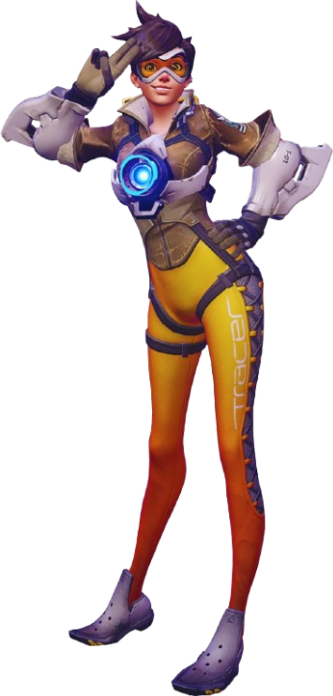
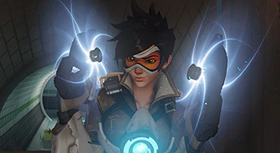
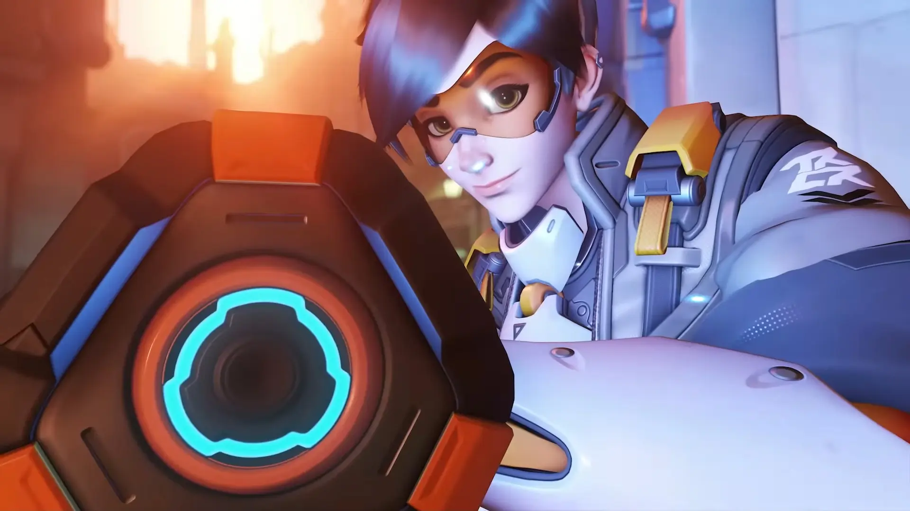

好きなヒーロー、一人目は「トレーサー」です。
トレーサーはこのゲームのヒーローの中で一番の瞬間的スピードを持っています。

一つ目のスキル ブリンク
このアビリティは水平方向にブリンク（瞬間移動）をすることが出来ます。
このスキルを使って、相手の意表をついて自衛能力の低いサポートや近距離に弱いキャラクターを潰しに行くことが出来ます。
相手に嫌がらせをいっぱいしてあげましょう！！！

もう一つのアビリティでは、時間を巻き戻すことができます！
対人戦のゲームで自分だけやり直すことが出来るという珍しいアビリティです。
このスキルがあることによって少しリスクを冒して突っ込んでも、帰ってこれたり
エイムが合わなくて倒しきれなくても、スキルを使ってもう一度倒しに行くこともできます。
one more chance\!\!\!

パルスボムは、トレーサーの強力な爆発系スキルです。
範囲内にいる相手に大きなダメージを与え、状況を一気にひっくり返すことができます。
ブリンクとリコールと同じように、タイミングを見て使うことで戦局を大きく変えることが出来ます。
一発の決め手としてとても頼りになるスキルです。

好きなヒーロー、二人目は「D.va」です。
D.vaはこのゲームのヒーローの中で一番の瞬間的火力を持っています。
一つ目のスキル ブリンク
このアビリティは水平方向にブリンク（瞬間移動）をすることが出来ます。
このスキルを使って、相手の意表をついて自衛能力の低いサポートや近距離に弱いキャラクターを潰しに行くことが出来ます。
相手に嫌がらせをいっぱいしてあげましょう！！！
もう一つのアビリティでは、時間を巻き戻すことができます！
対人戦のゲームで自分だけやり直すことが出来るという珍しいアビリティです。
このスキルがあることによって少しリスクを冒して突っ込んでも、帰ってこれたり
エイムが合わなくて倒しきれなくても、スキルを使ってもう一度倒しに行くこともできます。
one more chance\!\!\!
パルスボムは、トレーサーの強力な爆発系スキルです。
範囲内にいる相手に大きなダメージを与え、状況を一気にひっくり返すことができます。
ブリンクとリコールと同じように、タイミングを見て使うことで戦局を大きく変えることが出来ます。
一発の決め手としてとても頼りになるスキルです。
- 多様なヒーローキャラクター
- 戦略的なチームプレイ
- 美しいグラフィックとアニメーション
- 定期的なアップデートとイベント